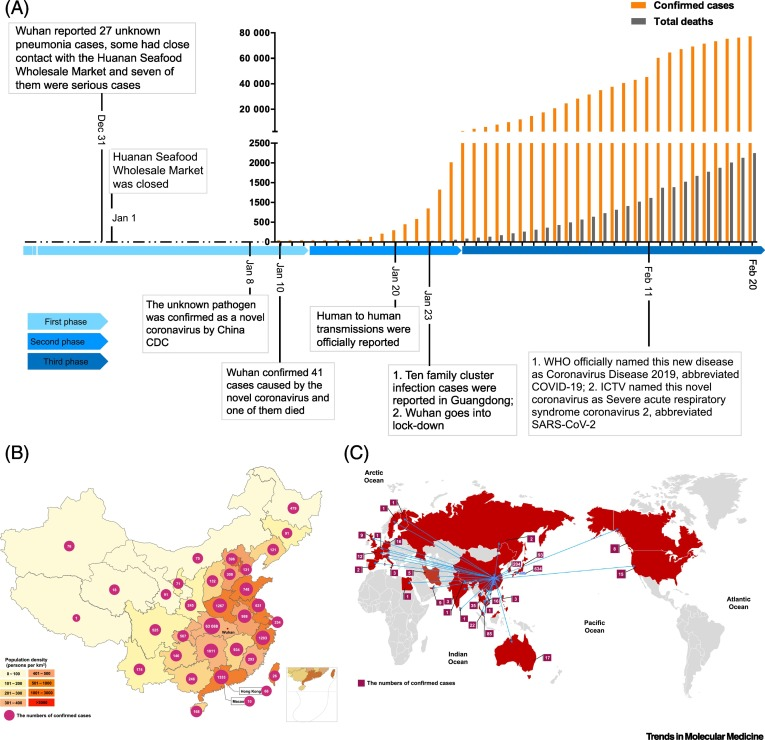

There are several theories about where the very first case (the so-called patient zero) originated. According to an unpublicized report from the Chinese government, the first case can be traced back to 17 November 2019; the person was a 55-year old citizen in Hubei province. There were four men and five women reported to be infected on November, but none of them were "patient zero". Starting from December, the number of coronavirus cases in Hubei gradually increased, reaching 60 by 20 December and at least 266 by 31 December.[499] According to official Chinese sources, these were mostly linked to the Huanan Seafood Wholesale Market, which also sold live animals.In May 2020, George Gao, the director of the Chinese Center for Disease Control and Prevention, said animal samples collected from the seafood market had tested negative for the virus, indicating that the market was the site of an early superspreading event, but it was not the site of the initial outbreak.
On 24 December, Wuhan Central Hospital sent a bronchoalveolar lavage fluid (BAL) sample from an unresolved clinical case to sequencing company Vision Medicals. On 27 and 28 December, Vision Medicals informed the Wuhan Central Hospital and the Chinese CDC of the results of the test, showing a new coronavirus.[501] A pneumonia cluster of unknown cause was observed on 26 December and treated by the doctor Zhang Jixian in Hubei Provincial Hospital, who informed the Wuhan Jianghan CDC on 27 December.On 30 December, a test report addressed to Wuhan Central Hospital, from company CapitalBio Medlab, stated an erroneous positive result for SARS, causing a group of doctors at Wuhan Central Hospital to alert their colleagues and relevant hospital authorities of the result. That evening, the Wuhan Municipal Health Commission issued a notice to various medical institutions on "the treatment of pneumonia of unknown cause". Eight of these doctors, including Li Wenliang (punished on 3 January), were later admonished by the police for spreading false rumours, and another, Ai Fen, was reprimanded by her superiors for raising the alarm.
The Wuhan Municipal Health Commission made the first public announcement of a pneumonia outbreak of unknown cause on 31 December, confirming 27 cases enough to trigger an investigation.
During the early stages of the outbreak, the number of cases doubled approximately every seven and a half days.In early and mid-January 2020, the virus spread to other Chinese provinces, helped by the Chinese New Year migration and Wuhan being a transport hub and major rail interchange.On 20 January, China reported nearly 140 new cases in one day, including two people in Beijing and one in Shenzhen.Later official data shows 6,174 people had already developed symptoms by then, and more may have been infected. A report in The Lancet on 24 January indicated human transmission, strongly recommended personal protective equipment for health workers, and said testing for the virus was essential due to its "pandemic potential". On 30 January, the WHO declared the coronavirus a public health emergency of international concern. By this time, the outbreak spread by a factor of 100 to 200 times[clarification needed].
On 31 January 2020, Italy had its first confirmed cases, two tourists from China.As of 13 March 2020, the WHO considered Europe the active centre of the pandemic.On 19 March 2020, Italy overtook China as the country with the most deaths. By 26 March, the United States had overtaken China and Italy with the highest number of confirmed cases in the world.[517] Research on coronavirus genomes indicates the majority of COVID-19 cases in New York came from European travellers, rather than directly from China or any other Asian country. Retesting of prior samples found a person in France who had the virus on 27 December 2019 and a person in the United States who died from the disease on 6 February 2020.
As of 9 June 2020, more than 7.11 million cases have been reported worldwide; more than 406,000 people have died and more than 3.29 million have recovered.
Many newspaper agencies removed their online paywalls for some or all of their coronavirus-related articles and posts,[996] while scientific publishers made scientific papers related to the outbreak available with open access. Some scientists chose to share their results quickly on preprint servers such as bioRxiv.
The pandemic has resulted in misinformation and conspiracy theories about the scale of the pandemic and the origin, prevention, diagnosis, and treatment of the disease.False information, including intentional disinformation, has been spread through social media,text messaging,and mass media,including the tabloid media,conservative media,and state media of countries such as China, Russia,Iran,and Turkmenistan. It has also been spread by state-backed covert operations to generate panic and sow distrust in other countries.In some countries, such as India, Bangladesh, and Ethiopia,journalists have been arrested for allegedly spreading fake news about the pandemic.
Misinformation has been propagated by celebrities, politicians (including heads of state in countries such as the United States,Iran,and Brazil), and other prominent public figures. Commercial scams have claimed to offer at-home tests, supposed preventives, and "miracle" cures.Several religious groups have claimed their faith will protect them from the virus.Some people have claimed the virus is a bio-weapon accidentally or purposefully leaked from a laboratory,a population control scheme, the result of a spy operation, or the side effect of 5G upgrades to cellular networks.
The World Health Organization has declared an "infodemic - an over-abundance of information – some accurate and some not".